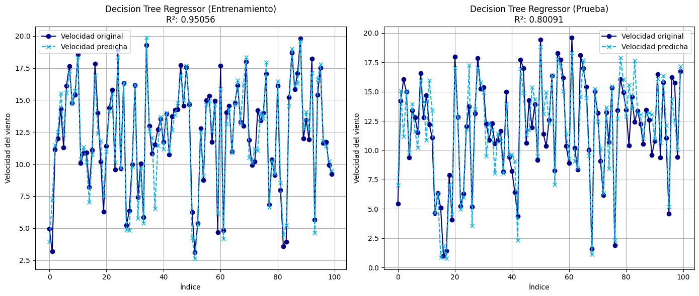
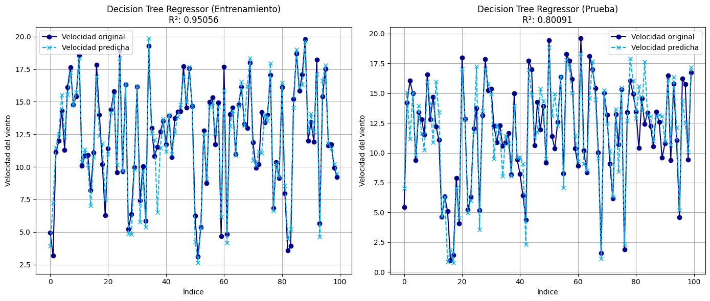

Modelos de regresión#
Librerías y modulos necesarios#
import warnings
import time
import pickle
import numpy as np
import pandas as pd
from sklearn.svm import SVR
import statsmodels.api as sm
import matplotlib.pyplot as plt
from skopt.space import Integer
from skopt import BayesSearchCV
from xgboost import XGBRegressor
warnings.filterwarnings("ignore")
from scipy.stats import jarque_bera
from sklearn.pipeline import Pipeline
from sklearn.linear_model import Ridge, Lasso
from sklearn.tree import DecisionTreeRegressor
from sklearn.linear_model import LinearRegression
from sklearn.neighbors import KNeighborsRegressor
from sklearn.ensemble import RandomForestRegressor
from statsmodels.stats.diagnostic import acorr_ljungbox
from sklearn.model_selection import GridSearchCV, KFold, train_test_split
from sklearn.metrics import r2_score, mean_squared_error, mean_absolute_error
Datos#
Inicialmente, realizamos el cargue del conjunto de datos, los cuales provienen del proceso de exploración, transformación y limpieza descrito en detalle en el EDA. Este procedimiento garantiza que la información esté depurada y lista para el análisis, asegurando condiciones óptimas para el desarrollo de modelos de aprendizaje automático y mejorando la calidad y confiabilidad de los resultados obtenidos.
file_path = r'C:\Users\kamac\OneDrive\Desktop\MachineLearningUN\EDA\ws_modelos.xlsx'
data = pd.read_excel(file_path)
Características principales de la base de datos#
Para analizar las principales características de los datos, utilizamos los métodos head() y tail(), que nos permiten visualizar las primeras y últimas cinco filas/observaciones del conjunto de datos. Esto nos permite confirmar que los datos cubren un periodo temporal desde el 1 de enero de 2022 hasta el 16 de mayo de 2022, garantizando que la información está correctamente estructurada y alineada con el rango esperado.
data.head()
| Fecha | VelViento100m_1 | VelViento100m_2 | VelViento80m_1 | VelViento80m_2 | VelViento60m | DirViento60m | DirViento100m | DirViento80m | Presion | Humedad | Temp100m | Temp21m | |
|---|---|---|---|---|---|---|---|---|---|---|---|---|---|
| 0 | 2022-01-01 00:00:00 | 16.060860 | 15.830104 | 15.145418 | 15.125038 | 14.300989 | 61.98 | 61.08 | 61.21 | 1005.963541 | 75.042725 | 26.922913 | 26.707773 |
| 1 | 2022-01-01 00:10:00 | 16.156927 | 15.972642 | 15.290614 | 15.352352 | 14.533556 | 62.29 | 61.08 | 61.49 | 1005.795867 | 73.509216 | 27.006836 | 26.772633 |
| 2 | 2022-01-01 00:20:00 | 16.473571 | 16.287375 | 15.599149 | 15.562022 | 14.808378 | 61.18 | 60.42 | 60.65 | 1005.739976 | 72.914124 | 26.991577 | 26.772633 |
| 3 | 2022-01-01 00:30:00 | 16.660009 | 16.451707 | 15.801446 | 15.779687 | 15.170287 | 62.20 | 60.88 | 61.19 | 1005.684085 | 73.165894 | 26.877136 | 26.659982 |
| 4 | 2022-01-01 00:40:00 | 16.519613 | 16.353678 | 15.851963 | 15.749131 | 14.927282 | 61.26 | 59.99 | 60.26 | 1005.609563 | 73.791504 | 26.770325 | 26.601949 |
data.tail()
| Fecha | VelViento100m_1 | VelViento100m_2 | VelViento80m_1 | VelViento80m_2 | VelViento60m | DirViento60m | DirViento100m | DirViento80m | Presion | Humedad | Temp100m | Temp21m | |
|---|---|---|---|---|---|---|---|---|---|---|---|---|---|
| 19003 | 2022-05-16 23:10:00 | 5.667995 | 5.628245 | 5.501305 | 5.550207 | 5.388042 | 60.80 | 57.36 | 58.61 | 1007.863847 | 92.353821 | 27.701111 | 27.636290 |
| 19004 | 2022-05-16 23:20:00 | 5.523755 | 5.470902 | 5.401929 | 5.417549 | 5.340636 | 58.95 | 56.91 | 58.10 | 1007.677543 | 92.506409 | 27.662964 | 27.619222 |
| 19005 | 2022-05-16 23:30:00 | 5.627141 | 5.566218 | 5.544223 | 5.575709 | 5.540006 | 58.45 | 55.67 | 56.47 | 1007.547129 | 92.498779 | 27.632446 | 27.591912 |
| 19006 | 2022-05-16 23:40:00 | 5.590224 | 5.554034 | 5.480490 | 5.488771 | 5.404135 | 54.54 | 52.24 | 53.25 | 1007.304934 | 92.544556 | 27.624817 | 27.585085 |
| 19007 | 2022-05-16 23:50:00 | 5.825946 | 5.788715 | 5.683985 | 5.699682 | 5.602768 | 56.87 | 53.48 | 55.07 | 1007.230412 | 92.613220 | 27.609558 | 27.564603 |
data.shape
(19008, 13)
El conjunto de datos cuenta con 13 variables y 19008 observaciones.
data.describe(include = 'number')
| VelViento100m_1 | VelViento100m_2 | VelViento80m_1 | VelViento80m_2 | VelViento60m | DirViento60m | DirViento100m | DirViento80m | Presion | Humedad | Temp100m | Temp21m | |
|---|---|---|---|---|---|---|---|---|---|---|---|---|
| count | 19008.000000 | 19008.000000 | 19008.000000 | 19008.000000 | 19008.000000 | 19008.000000 | 19008.000000 | 19008.000000 | 19008.000000 | 19008.000000 | 19008.000000 | 19008.000000 |
| mean | 12.342915 | 12.208528 | 11.964910 | 11.961529 | 11.636214 | 66.866064 | 65.645194 | 65.904410 | 1006.196902 | 84.469273 | 26.265028 | 26.486346 |
| std | 4.433466 | 4.385033 | 4.268770 | 4.258439 | 4.103487 | 47.736005 | 48.149888 | 47.909614 | 1.823613 | 4.292172 | 0.837681 | 0.946633 |
| min | 0.251334 | 0.225181 | 0.236040 | 0.255526 | 0.292860 | 0.230000 | 0.000000 | 0.030000 | 1001.417712 | 63.072205 | 23.710938 | 22.700129 |
| 25% | 9.837316 | 9.736328 | 9.612626 | 9.624122 | 9.451099 | 48.840000 | 47.840000 | 47.890000 | 1004.901606 | 81.634521 | 25.709839 | 25.820220 |
| 50% | 12.963534 | 12.826116 | 12.574976 | 12.572975 | 12.247453 | 56.420000 | 55.230000 | 55.525000 | 1006.112585 | 84.625244 | 26.060791 | 26.323735 |
| 75% | 15.570065 | 15.395811 | 15.044143 | 15.026889 | 14.568282 | 64.360000 | 62.900000 | 63.312500 | 1007.421374 | 87.646484 | 26.571960 | 26.984280 |
| max | 22.301553 | 22.027242 | 21.730798 | 21.769775 | 21.140790 | 359.900000 | 359.950000 | 359.890000 | 1012.428307 | 94.093323 | 33.903809 | 34.596755 |
A partir del análisis estadístico de las variables presentadas en el resumen descriptivo, se puede observar que no hay valores erróneos en los datos de velocidad del viento, presión atmosférica, humedad relativa, temperatura y dirección del viento. Esto se debe a que se han aplicado previamente criterios específicos de limpieza para garantizar la calidad de la base de datos.
Para identificar y eliminar los datos erróneos, se emplearon las siguientes reglas: en la velocidad del viento, cualquier valor menor a 0.5 m/s que permanezca fijo en el tiempo se considera un error. Para la presión atmosférica, valores por debajo de 980 hPa se identifican como erróneos. En el caso de la humedad relativa, valores menores a 60% son inválidos, y para la temperatura, cualquier valor inferior a 20°C también es considerado un error, con la particularidad de que los errores en humedad y temperatura suelen coincidir en el tiempo.
Por otro lado, la dirección del viento presenta desafíos adicionales en su evaluación, ya que es una variable circular en la que 360° equivale a 0°. Por lo tanto, valores altos no son necesariamente erróneos ni atípicos; en su lugar, los errores en esta variable se detectan cuando la serie permanece fija en un valor específico de manera prolongada.
Con estos filtros aplicados, los valores descriptivos en el resumen indican que la base de datos está limpia y lista para desarrollar y aplicar modelos de regresión para cada una de las variables de velocidad del viento a diferentes alturas.
Modelos de regresión#
En esta sección, abordamos la implementación de los modelos de regresión. Nuestro objetivo principal es predecir la velocidad del viento, y para ello hemos identificado cinco variables objetivo, las cuales corresponden a las velocidades del viento medidas a diferentes alturas y con distintos sensores. Para modelar estas variables, aplicaremos los ocho modelos de regresión seleccionados durante el semestre académico en la clase de Machine Learning: Regresión K-NN, Regresión Ridge, Regresión Lasso, Regresión Lineal, Árboles de decisión para regresión, Random Forest, XGBoost y SVR.
Métricas de evaluación#
En este proyecto, utilizaremos varias métricas de desempeño para evaluar y comparar la capacidad predictiva de los modelos implementados. Estas métricas son las siguientes:
Mean Absolute Percentage Error (MAPE): Mide el error porcentual promedio entre los valores predichos y los valores reales. Es útil para interpretar el desempeño del modelo en términos relativos y facilita la comparación entre diferentes modelos.
Mean Absolute Error (MAE): Calcula el promedio del error absoluto entre los valores predichos y los reales. Es una métrica que refleja el error promedio sin importar su dirección (positivo o negativo).
Mean Squared Error (MSE): Promedia el cuadrado de los errores entre los valores reales y predichos. Penaliza más severamente los errores grandes, lo que la hace útil para detectar grandes discrepancias en las predicciones.
Root Mean Squared Error (RMSE): Es la raíz cuadrada del MSE y tiene la misma unidad que los datos originales. Permite interpretar fácilmente el nivel promedio de error en las predicciones.
Coeficiente de Determinación (R²): Evalúa qué proporción de la variabilidad en los datos reales es explicada por el modelo. Un valor cercano a 1 indica un modelo altamente explicativo.
Ljung-Box p-value: Verifica si los residuos del modelo son independientes y no están correlacionados.
Hipótesis:
\(H_0:\) Los residuos no están autocorrelacionados (independencia).
\(H_1:\) Los residuos están autocorrelacionados.
Interpretación: Un valor p mayor a 0.05 indica que no hay evidencia de correlación entre los residuos, lo que sugiere independencia.
Jarque-Bera p-value: Evalúa si los residuos siguen una distribución normal.
Hipótesis:
\(H_0:\) Los residuos tienen una distribución normal.
\(H_1:\) Los residuos no tienen una distribución normal.
Interpretación: Un valor p mayor a 0.05 indica que no hay evidencia suficiente para rechazar la normalidad de los residuos.
En este proyecto, nuestra métrica objetivo principal será el R² y el RMSE, ya que estas permiten evaluar, respectivamente, qué tanta variabilidad de los datos reales puede ser explicada por el modelo y el nivel promedio de error de las predicciones. Estas métricas son especialmente útiles para analizar el desempeño predictivo de los modelos y compararlos en términos de precisión y capacidad explicativa.
Métodos para realizar las gráficas#
En esta sección, se desarrollan métodos para generar gráficas de las predicciones y los residuos, con el propósito de optimizar el código para cada uno de los modelos a implementar.
def grafica(nombre_modelo, y_train, y_train_pred, y_test, y_test_pred):
r2_train = r2_score(y_train, y_train_pred)
r2_test = r2_score(y_test, y_test_pred)
plt.figure(figsize=(14, 6))
n_display = 100
# Gráfico del conjunto de entrenamiento
plt.subplot(1, 2, 1)
plt.plot(range(n_display), y_train[:n_display], label='Velocidad original', color='#00008B', linestyle='-', marker='o')
plt.plot(range(n_display), y_train_pred[:n_display], label='Velocidad predicha', color='#00B2EE', linestyle='--', marker='x')
plt.xlabel('Índice')
plt.ylabel('Velocidad del viento')
plt.title(f"{nombre_modelo} (Entrenamiento)\nR²: {r2_train:.5f}")
plt.legend()
plt.grid(True)
# Gráfico del conjunto de prueba
plt.subplot(1, 2, 2)
plt.plot(range(n_display), y_test[:n_display], label='Velocidad original', color='#00008B', linestyle='-', marker='o')
plt.plot(range(n_display), y_test_pred[:n_display], label='Velocidad predicha', color='#00B2EE', linestyle='--', marker='x')
plt.xlabel('Índice')
plt.ylabel('Velocidad del viento')
plt.title(f"{nombre_modelo} (Prueba)\nR²: {r2_test:.5f}")
plt.legend()
plt.grid(True)
plt.tight_layout()
plt.show()
def grafica_residuos(nombre_modelo, residuos):
fig, axes = plt.subplots(1, 2, figsize=(12, 5))
# Histograma de los residuos
axes[0].hist(residuos, bins=30, color='#00008B', edgecolor = 'black')
axes[0].set_title(f"Histograma de los Residuos ({nombre_modelo})")
axes[0].set_xlabel("Valor del Residuo")
axes[0].set_ylabel("Frecuencia")
# Gráfico de autocorrelación
sm.graphics.tsa.plot_acf(residuos, lags=20, ax=axes[1], color='#00008B', vlines_kwargs={'color': '#00008B'}, alpha = 0.05)
axes[1].set_title(f"Autocorrelación de los Residuos ({nombre_modelo})")
plt.tight_layout()
plt.grid(True)
plt.show()
Métodos para los modelos de regresión#
A continuación se presenta un método para cada uno de los modelos de regresión, con el objetivo de reducir la cantidad de código repetido. Estos métodos se encargan de encontrar los mejores hiperparámetros, evaluar los modelos, calcular las métricas y generar las predicciones, utilizando los conjuntos de datos X_train, y_train, X_test y y_test.
Este proceso se aplica a cada uno de los modelos de regresión, incluyendo KNN, regresión lineal, Ridge, Lasso, Árbol de decisión regresor, Random Forest Regressor, XGBoost y SVR, garantizando así un flujo de trabajo consistente y eficiente para cada técnica.
KNN Regressor#
El algoritmo KNN Regressor predice el valor objetivo de una muestra basándose en el promedio de los valores de sus K vecinos más cercanos, determinados según una métrica de distancia. Es un método no paramétrico, ideal para problemas no lineales, pero sensible a datos ruidosos y alta dimensionalidad.
Hiperparámetros:
n_neighbors:Número de vecinos considerados para la predicción.
Valores bajos pueden llevar a sobreajuste; valores altos pueden causar subajuste.
p:Define la métrica de distancia:
1: Distancia Manhattan.
2: Distancia Euclidiana (por defecto).
Ambos parámetros afectan la precisión y el comportamiento del modelo, por lo que deben ajustarse cuidadosamente.
def evaluate_knn(X_train, y_train, X_test, y_test, results, resultados_graficos):
param_grid_knn = {
'n_neighbors': [5, 10, 15, 20, 25, 30, 40, 50],
'p': [1, 2] # Normas de distancia: Manhattan (1), Euclidiana (2)
}
modelo = KNeighborsRegressor()
grid_knn = GridSearchCV(modelo, param_grid_knn, cv = 10, scoring = 'r2')
start_time = time.time()
grid_knn.fit(X_train, y_train)
end_time = time.time()
execution_time = end_time - start_time
y_train_pred = grid_knn.predict(X_train)
y_pred_knn = grid_knn.predict(X_test)
residuals = y_test - y_pred_knn
r2 = r2_score(y_test, y_pred_knn)
mape = np.mean(np.abs((y_test - y_pred_knn) / y_test)) * 100
rmse = np.sqrt(mean_squared_error(y_test, y_pred_knn))
mae = mean_absolute_error(y_test, y_pred_knn)
mse = mean_squared_error(y_test, y_pred_knn)
ljung_box_p_value = acorr_ljungbox(residuals, lags=[30], return_df=True)['lb_pvalue'].iloc[0]
jarque_bera_p_value = jarque_bera(residuals)[1]
results.append({
'Modelo': 'K-NN Regressor',
'MAPE': mape,
'MAE': mae,
'MSE': mse,
'RMSE': rmse,
'R²': r2,
'Ljung-Box p-value': ljung_box_p_value,
'Jarque-Bera p-value': jarque_bera_p_value,
'Tiempo de ejecución (s)': execution_time
})
resultados_graficos.append({
'nombre_modelo': 'K-NN Regressor',
'y_train': y_train,
'y_train_pred': y_train_pred,
'y_test': y_test,
'y_test_pred': y_pred_knn,
'residuos': residuals
})
Ridge Regression#
Ridge Regression es una técnica de regresión lineal regularizada que añade una penalización al modelo en función del tamaño de los coeficientes. Esto evita problemas de sobreajuste, especialmente en conjuntos de datos donde las variables están altamente correlacionadas (multicolinealidad). La penalización está controlada por un hiperparámetro denominado alpha.
Hiperparámetros:
alpha:Controla la fuerza de la regularización.
Valores pequeños de
alpha(cercanos a 0) hacen que el modelo se comporte como una regresión lineal estándar.Valores altos aplican una mayor penalización, lo que reduce el tamaño de los coeficientes y hace que el modelo sea más robusto frente al sobreajuste.
def evaluate_ridge(X_train, y_train, X_test, y_test, results, resultados_graficos):
param_grid_ridge = {
'alpha': [0.001, 0.01, 0.1, 1, 10, 100, 1000]
}
modelo = Ridge()
grid_ridge = GridSearchCV(modelo, param_grid_ridge, cv = 10, scoring = 'r2')
start_time = time.time()
grid_ridge.fit(X_train, y_train)
end_time = time.time()
execution_time = end_time - start_time
y_train_pred = grid_ridge.predict(X_train)
y_pred_ridge = grid_ridge.predict(X_test)
residuals = y_test - y_pred_ridge
r2 = r2_score(y_test, y_pred_ridge)
mape = np.mean(np.abs((y_test - y_pred_ridge) / y_test)) * 100
rmse = np.sqrt(mean_squared_error(y_test, y_pred_ridge))
mae = mean_absolute_error(y_test, y_pred_ridge)
mse = mean_squared_error(y_test, y_pred_ridge)
ljung_box_p_value = acorr_ljungbox(residuals, lags=[30], return_df=True)['lb_pvalue'].iloc[0]
jarque_bera_p_value = jarque_bera(residuals)[1]
results.append({
'Modelo': 'Ridge Regression',
'MAPE': mape,
'MAE': mae,
'MSE': mse,
'RMSE': rmse,
'R²': r2,
'Ljung-Box p-value': ljung_box_p_value,
'Jarque-Bera p-value': jarque_bera_p_value,
'Tiempo de ejecución (s)': execution_time
})
resultados_graficos.append({
'nombre_modelo': 'Ridge Regression',
'y_train': y_train,
'y_train_pred': y_train_pred,
'y_test': y_test,
'y_test_pred': y_pred_ridge,
'residuos': residuals
})
Lasso Regression#
Es una técnica de regresión lineal regularizada que utiliza la penalización L1. Esta penalización no solo reduce el tamaño de los coeficientes, sino que también puede llevarlos a cero, realizando una selección automática de variables. Es particularmente útil cuando se busca un modelo interpretable eliminando variables irrelevantes.
Hiperparámetros:
alpha:Controla la fuerza de la regularización L1.
Valores pequeños de
alphapermiten que los coeficientes sean más grandes y el modelo se asemeje a una regresión lineal estándar.Valores altos de
alphaaplican mayor penalización, eliminando coeficientes irrelevantes (reduciéndolos a cero) para simplificar el modelo.
def evaluate_lasso(X_train, y_train, X_test, y_test, results, resultados_graficos):
param_grid_lasso = {
'alpha': [0.001, 0.01, 0.1, 1, 10, 100, 1000]
}
modelo = Lasso(max_iter=1000)
grid_lasso = GridSearchCV(modelo, param_grid_lasso, cv = 10, scoring='r2')
start_time = time.time()
grid_lasso.fit(X_train, y_train)
end_time = time.time()
execution_time = end_time - start_time
y_train_pred = grid_lasso.predict(X_train)
y_pred_lasso = grid_lasso.predict(X_test)
residuals = y_test - y_pred_lasso
r2 = r2_score(y_test, y_pred_lasso)
mape = np.mean(np.abs((y_test - y_pred_lasso) / y_test)) * 100
rmse = np.sqrt(mean_squared_error(y_test, y_pred_lasso))
mae = mean_absolute_error(y_test, y_pred_lasso)
mse = mean_squared_error(y_test, y_pred_lasso)
ljung_box_p_value = acorr_ljungbox(residuals, lags=[30], return_df=True)['lb_pvalue'].iloc[0]
jarque_bera_p_value = jarque_bera(residuals)[1]
results.append({
'Modelo': 'Lasso Regression',
'MAPE': mape,
'MAE': mae,
'MSE': mse,
'RMSE': rmse,
'R²': r2,
'Ljung-Box p-value': ljung_box_p_value,
'Jarque-Bera p-value': jarque_bera_p_value,
'Tiempo de ejecución (s)': execution_time
})
resultados_graficos.append({
'nombre_modelo': 'Lasso Regression',
'y_train': y_train,
'y_train_pred': y_train_pred,
'y_test': y_test,
'y_test_pred': y_pred_lasso,
'residuos': residuals
})
Linear Regression#
La Regresión Lineal es el modelo más simple y básico para predecir una variable dependiente continua basada en una o más variables independientes. Busca encontrar una relación lineal entre las variables ajustando un hiperplano que minimice la suma de los errores cuadrados entre las predicciones y los valores reales.
Hiperparámetros: La Regresión Lineal no tiene hiperparámetros ajustables. Su comportamiento depende únicamente de los datos de entrenamiento y no aplica regularización ni ajustes adicionales, lo que la hace un modelo sencillo pero limitado en problemas con multicolinealidad o sobreajuste.
def evaluate_linear(X_train, y_train, X_test, y_test, results, resultados_graficos):
modelo = LinearRegression()
start_time = time.time()
modelo.fit(X_train, y_train)
end_time = time.time()
execution_time = end_time - start_time
y_pred = modelo.predict(X_test)
y_pred_train = modelo.predict(X_train)
residuals = y_test - y_pred
r2 = r2_score(y_test, y_pred)
mape = np.mean(np.abs((y_test - y_pred) / y_test)) * 100
rmse = np.sqrt(mean_squared_error(y_test, y_pred))
mae = mean_absolute_error(y_test, y_pred)
mse = mean_squared_error(y_test, y_pred)
ljung_box_p_value = acorr_ljungbox(residuals, lags = [30], return_df = True)['lb_pvalue'].iloc[0]
jarque_bera_p_value = jarque_bera(residuals)[1]
results.append({
'Modelo': 'Linear Regression',
'MAPE': mape,
'MAE': mae,
'MSE': mse,
'RMSE': rmse,
'R²': r2,
'Ljung-Box p-value': ljung_box_p_value,
'Jarque-Bera p-value': jarque_bera_p_value,
'Tiempo de ejecución (s)': execution_time
})
resultados_graficos.append({
'nombre_modelo': 'Regresión Lineal',
'y_train': y_train,
'y_train_pred': y_pred_train,
'y_test': y_test,
'y_test_pred': y_pred,
'residuos': residuals
})
Decision Tree Regressor#
El Decision Tree Regressor es un modelo basado en árboles que divide los datos en subconjuntos más pequeños para capturar relaciones complejas entre variables. Es interpretativo y flexible, pero puede sobreajustar si no se regulariza.
Hiperparámetros:
max_depth: Profundidad máxima del árbol. Controla la complejidad del modelo para evitar sobreajuste.min_samples_split: Número mínimo de muestras necesarias para dividir un nodo. Valores más altos simplifican el modelo.min_samples_leaf: Número mínimo de muestras en cada nodo hoja. Valores más altos generan árboles más simples.
def evaluate_tree(X_train, y_train, X_test, y_test, results, resultados_graficos):
param_grid_tree = {
'max_depth': [1, 5,10, 15, 20],
'min_samples_split': [2, 3, 4, 5, 6, 7, 8, 9, 10, 11, 12, 13, 14, 15],
'min_samples_leaf': [2, 3, 4, 5, 6, 7, 8, 9, 10, 11, 12, 13, 14, 15]
}
modelo = DecisionTreeRegressor()
grid_tree = GridSearchCV(modelo, param_grid_tree, cv = 10, scoring = 'r2')
start_time = time.time()
grid_tree.fit(X_train, y_train)
end_time = time.time()
execution_time = end_time - start_time
y_train_pred = grid_tree.predict(X_train)
y_pred_tree = grid_tree.predict(X_test)
residuals = y_test - y_pred_tree
r2 = r2_score(y_test, y_pred_tree)
mape = np.mean(np.abs((y_test - y_pred_tree) / y_test)) * 100
rmse = np.sqrt(mean_squared_error(y_test, y_pred_tree))
mae = mean_absolute_error(y_test, y_pred_tree)
mse = mean_squared_error(y_test, y_pred_tree)
ljung_box_p_value = acorr_ljungbox(residuals, lags=[30], return_df=True)['lb_pvalue'].iloc[0]
jarque_bera_p_value = jarque_bera(residuals)[1]
results.append({
'Modelo': 'Decision Tree Regressor',
'MAPE': mape,
'MAE': mae,
'MSE': mse,
'RMSE': rmse,
'R²': r2,
'Ljung-Box p-value': ljung_box_p_value,
'Jarque-Bera p-value': jarque_bera_p_value,
'Tiempo de ejecución (s)': execution_time
})
resultados_graficos.append({
'nombre_modelo': 'Decision Tree Regressor',
'y_train': y_train,
'y_train_pred': y_train_pred,
'y_test': y_test,
'y_test_pred': y_pred_tree,
'residuos': residuals
})
Random Forest Regressor#
El Random Forest Regressor es un modelo de ensamble basado en múltiples árboles de decisión. Combina las predicciones de varios árboles para mejorar la precisión y reducir el sobreajuste.
Hiperparámetros:
n_estimators: Número de árboles en el bosque. Más árboles generalmente mejoran la estabilidad del modelo.max_depth: Profundidad máxima de los árboles. Controla la complejidad del modelo y previene el sobreajuste.
def evaluate_forest(X_train, y_train, X_test, y_test, results, resultados_graficos):
param_grid_rf = {
'n_estimators': list(range(10, 101, 10)), # Valores entre 10 y 100 en pasos de 10
'max_depth': list(range(5, 21, 5))
}
modelo = RandomForestRegressor()
grid_rf = GridSearchCV(modelo,param_grid_rf, cv = 10, scoring='r2')
start_time = time.time()
grid_rf.fit(X_train, y_train)
end_time = time.time()
execution_time = end_time - start_time
y_train_pred = grid_rf.predict(X_train)
y_pred_rf = grid_rf.predict(X_test)
residuals = y_test - y_pred_rf
r2 = r2_score(y_test, y_pred_rf)
mape = np.mean(np.abs((y_test - y_pred_rf) / y_test)) * 100
rmse = np.sqrt(mean_squared_error(y_test, y_pred_rf))
mae = mean_absolute_error(y_test, y_pred_rf)
mse = mean_squared_error(y_test, y_pred_rf)
ljung_box_p_value = acorr_ljungbox(residuals, lags=[30], return_df=True)['lb_pvalue'].iloc[0]
jarque_bera_p_value = jarque_bera(residuals)[1]
results.append({
'Modelo': 'Random Forest Regressor',
'MAPE': mape,
'MAE': mae,
'MSE': mse,
'RMSE': rmse,
'R²': r2,
'Ljung-Box p-value': ljung_box_p_value,
'Jarque-Bera p-value': jarque_bera_p_value,
'Tiempo de ejecución (s)': execution_time
})
resultados_graficos.append({
'nombre_modelo': 'Random Forest Regressor',
'y_train': y_train,
'y_train_pred': y_train_pred,
'y_test': y_test,
'y_test_pred': y_pred_rf,
'residuos': residuals
})
XGBoost Regressor#
XGBoost (eXtreme Gradient Boosting) es un modelo de ensamble basado en árboles de decisión que utiliza técnicas de boosting para mejorar iterativamente el rendimiento del modelo. Es conocido por su eficiencia, velocidad y rendimiento en problemas de regresión y clasificación.
Hiperparámetros:
n_estimators: Número de árboles que se construirán en el modelo. Incrementar el número de árboles puede mejorar el rendimiento, pero también incrementa el tiempo de entrenamiento.max_depth: Profundidad máxima de los árboles. Controla la complejidad del modelo, evitando sobreajuste al limitar el crecimiento de los árboles.learning_rate: Tasa de aprendizaje que ajusta cuánto contribuye cada árbol a la predicción final. Valores más bajos requieren más árboles para converger, pero pueden mejorar la generalización.
def evaluate_xgboost(X_train, y_train, X_test, y_test, results, resultados_graficos):
param_grid_xgb = {
'n_estimators': list(range(10, 201, 10)), # Valores entre 10 y 100 en pasos de 10
'max_depth': list(range(5, 21, 5)), # Valores de profundidad del árbol
'learning_rate': [0.01, 0.05, 0.1, 0.2, 0.3] # Tasa de aprendizaje
}
modelo = XGBRegressor(random_state = 11)
grid_xgb = GridSearchCV(modelo, param_grid_xgb, cv = 10, scoring='r2')
start_time = time.time()
grid_xgb.fit(X_train, y_train)
end_time = time.time()
execution_time = end_time - start_time
y_train_pred = grid_xgb.predict(X_train)
y_pred_xgb = grid_xgb.predict(X_test)
residuals = y_test - y_pred_xgb
r2 = r2_score(y_test, y_pred_xgb)
mape = np.mean(np.abs((y_test - y_pred_xgb) / y_test)) * 100
rmse = np.sqrt(mean_squared_error(y_test, y_pred_xgb))
mae = mean_absolute_error(y_test, y_pred_xgb)
mse = mean_squared_error(y_test, y_pred_xgb)
ljung_box_p_value = acorr_ljungbox(residuals, lags=[30], return_df=True)['lb_pvalue'].iloc[0]
jarque_bera_p_value = jarque_bera(residuals)[1]
results.append({
'Modelo': 'XGBoost Regressor',
'MAPE': mape,
'MAE': mae,
'MSE': mse,
'RMSE': rmse,
'R²': r2,
'Ljung-Box p-value': ljung_box_p_value,
'Jarque-Bera p-value': jarque_bera_p_value,
'Tiempo de ejecución (s)': execution_time
})
resultados_graficos.append({
'nombre_modelo': 'XGBoost Regressor',
'y_train': y_train,
'y_train_pred': y_train_pred,
'y_test': y_test,
'y_test_pred': y_pred_xgb,
'residuos': residuals
})
SVR (Support Vector Regression)#
El modelo de Support Vector Regression (SVR) utiliza principios de los Support Vector Machines (SVM) para realizar predicciones en problemas de regresión. Busca encontrar una función que tenga un margen máximo (tolerancia al error) alrededor de los valores predichos, asegurando un modelo robusto y generalizable.
Hiperparámetros:
kernel: Define la función del kernel utilizada para transformar los datos en un espacio de características más alto. En este caso, se utiliza'rbf'(función de base radial), que es ideal para modelar relaciones no lineales.C: Parámetro de penalización. Controla el equilibrio entre minimizar el error de entrenamiento y lograr una buena generalización. Valores más altos permiten que el modelo se ajuste más a los datos de entrenamiento.gamma: Coeficiente del kernel. Controla la influencia de un solo punto de datos. Valores pequeños implican que los puntos alejados tienen un impacto significativo, mientras que valores grandes restringen la influencia a puntos cercanos.
def evaluate_svr(X_train, y_train, X_test, y_test, results, resultados_graficos):
param_grid = {
'kernel': ['rbf'], # Selección de funciones kernel
'C': [0.1, 1], # Parámetro de penalización
'gamma': ['scale', 'auto'] # Coeficiente del kernel
}
modelo = SVR()
grid = GridSearchCV(modelo, param_grid, cv = 10, scoring = 'r2')
start_time = time.time()
grid.fit(X_train, y_train)
end_time = time.time()
execution_time = end_time - start_time
y_pred_train = grid.predict(X_train)
y_pred = grid.predict(X_test)
residuals = y_test - y_pred
r2 = r2_score(y_test, y_pred)
mape = np.mean(np.abs((y_test - y_pred) / y_test)) * 100
rmse = np.sqrt(mean_squared_error(y_test, y_pred))
mae = mean_absolute_error(y_test, y_pred)
mse = mean_squared_error(y_test, y_pred)
ljung_box_p_value = acorr_ljungbox(residuals, lags = [30], return_df = True)['lb_pvalue'].iloc[0]
jarque_bera_p_value = jarque_bera(residuals)[1]
results.append({
'Modelo': 'SVR',
'MAPE': mape,
'MAE': mae,
'MSE': mse,
'RMSE': rmse,
'R²': r2,
'Ljung-Box p-value': ljung_box_p_value,
'Jarque-Bera p-value': jarque_bera_p_value,
'Tiempo de ejecución (s)': execution_time
})
resultados_graficos.append({
'nombre_modelo': 'SVR',
'y_train': y_train,
'y_train_pred': y_pred_train,
'y_test': y_test,
'y_test_pred': y_pred,
'residuos': residuals
})
Aspectos importantes#
División del conjunto de datos: El conjunto se particiona en dos subconjuntos: un 70% destinado al entrenamiento y un 30% reservado para la prueba.
Orden de los datos: La partición se realiza sin conservar el orden cronológico, ya que el conjunto de datos y las variables no presentan tendencias temporales relevantes. Mantener el orden cronológico podría introducir sesgos y afectar negativamente el desempeño del modelo, por lo que se opta por un particionamiento aleatorio para garantizar una mejor capacidad predictiva.
Para cada una de las alturas de la velocidad del viento, se aplicará el siguiente procedimiento:
Separación del Conjunto de Datos:
Separamos el conjunto de datos en
X{i}, que contiene las variables explicativas relacionadas con la alturai, yy{i}, que representa la velocidad del viento a esa altura. Cabe recordar que existen cinco alturas a evaluar: 100 m (sensor 1), 100 m (sensor 2), 80 m (sensor 1), 80 m (sensor 2), y 60 m.
División en Conjuntos de Entrenamiento y Prueba:
Utilizando
train_test_split, dividimos los datos enX_train,X_test,y_trainyy_test.
Aplicación de Modelos de Regresión:
Se aplican los modelos, generando una tabla que contiene las métricas de evaluación y los valores de los residuos.
Visualización de Resultados:
Se grafican las predicciones contra los valores reales, tanto en el conjunto de entrenamiento como en el de prueba.
Se generan gráficos para evaluar la normalidad de los residuos (histograma de normalidad) y su autocorrelación.
Modelo 1: Wind speed 100 metros (Sensor 1)#
X1 = data.drop(columns=['Fecha', 'VelViento100m_1', 'VelViento100m_2', 'VelViento80m_1', 'VelViento80m_2', 'VelViento60m', 'DirViento80m', 'DirViento60m'])
y1 = data['VelViento100m_1']
X_train, X_test, y_train, y_test = train_test_split(X1, y1, test_size = 0.3, random_state = 11)
resultados1 = []
resultados_graficos1 = []
evaluate_knn(X_train, y_train, X_test, y_test, resultados1, resultados_graficos1)
evaluate_ridge(X_train, y_train, X_test, y_test, resultados1, resultados_graficos1)
evaluate_lasso(X_train, y_train, X_test, y_test, resultados1, resultados_graficos1)
evaluate_linear(X_train, y_train, X_test, y_test, resultados1, resultados_graficos1)
evaluate_tree(X_train, y_train, X_test, y_test, resultados1, resultados_graficos1)
evaluate_forest(X_train, y_train, X_test, y_test, resultados1, resultados_graficos1)
evaluate_xgboost(X_train, y_train, X_test, y_test, resultados1, resultados_graficos1)
evaluate_svr(X_train, y_train, X_test, y_test, resultados1, resultados_graficos1)
resultados1 = pd.DataFrame(resultados1)
resultados1
| Modelo | MAPE | MAE | MSE | RMSE | R² | Ljung-Box p-value | Jarque-Bera p-value | Tiempo de ejecución (s) | |
|---|---|---|---|---|---|---|---|---|---|
| 0 | K-NN Regressor | 16.915143 | 1.309740 | 3.396062 | 1.842841 | 0.821791 | 0.973834 | 0.000000e+00 | 4.880810 |
| 1 | Ridge Regression | 31.092871 | 2.332523 | 8.717321 | 2.952511 | 0.542558 | 0.673576 | 1.529324e-64 | 0.370451 |
| 2 | Lasso Regression | 31.086646 | 2.333257 | 8.719212 | 2.952831 | 0.542459 | 0.672128 | 1.005781e-63 | 0.483886 |
| 3 | Linear Regression | 31.084904 | 2.333242 | 8.719288 | 2.952844 | 0.542455 | 0.672154 | 9.826798e-64 | 0.011860 |
| 4 | Decision Tree Regressor | 14.921594 | 1.286196 | 3.766052 | 1.940632 | 0.802376 | 0.371857 | 0.000000e+00 | 369.826796 |
| 5 | Random Forest Regressor | 12.227584 | 1.019278 | 2.102635 | 1.450046 | 0.889664 | 0.699450 | 0.000000e+00 | 780.819043 |
| 6 | XGBoost Regressor | 11.475852 | 0.972034 | 2.008381 | 1.417173 | 0.894610 | 0.402368 | 0.000000e+00 | 2308.316762 |
| 7 | SVR | 21.782665 | 1.536131 | 4.331848 | 2.081309 | 0.772686 | 0.925772 | 3.915347e-207 | 587.211124 |
resultados1.to_pickle('resultados1.pkl')
with open('resultados_graficos1.pkl', 'wb') as file:
pickle.dump(resultados_graficos1, file)
with open('resultados_graficos1.pkl', 'rb') as file:
resultados_graficos1_cargado = pickle.load(file)
for resultado in resultados_graficos1:
# Gráfica de predicciones
grafica(
resultado['nombre_modelo'],
resultado['y_train'], resultado['y_train_pred'],
resultado['y_test'], resultado['y_test_pred']
)


for resultado in resultados_graficos1:
grafica_residuos(
resultado['nombre_modelo'],
resultado['residuos']
)
Interpretación de los resultados#
Los resultados obtenidos en la tabla reflejan un análisis exhaustivo de los diferentes modelos de regresión evaluados para predecir la velocidad del viento a 100 metros de altura utilizando los datos del Sensor 1, correspondiente a la dirección NW. Entre todos los modelos, el XGBoost Regressor destaca como el más preciso, con el menor error porcentual medio absoluto (MAPE = 11.4758%) y la menor raíz del error cuadrático medio (RMSE = 1.4717), además de un coeficiente de determinación (R² = 0.8936) que indica que explica el 89.36% de la variabilidad en los datos. Otros modelos como el Random Forest Regressor y el Decision Tree Regressor también muestran un desempeño competitivo, evidenciando su capacidad para capturar relaciones no lineales en los datos. En contraste, los modelos lineales como Ridge Regression, Lasso Regression, y Linear Regression presentan un desempeño limitado, con valores de R² cercanos a 0.54, lo que sugiere que explican menos de la mitad de la variabilidad.
En cuanto a los residuos de los modelos, las pruebas estadísticas, como el p-value de Jarque-Bera, indican que estos no siguen una distribución normal, pese a que en las gráficas de los residuos se observa una distribución visualmente cercana a la normalidad. Esta discrepancia se explica por la presencia de múltiples datos atípicos en las variables meteorológicas, los cuales no fueron imputados ni eliminados ya que representan eventos reales y son inherentes a las mediciones de este tipo de datos. Adicionalmente, la prueba de Ljung-Box confirma la independencia de los residuos al mostrar valores p elevados, indicando que no existe una autocorrelación significativa en ellos. Esto respalda que los modelos están capturando correctamente las relaciones temporales, si bien la presencia de datos extremos introduce cierta complejidad en los análisis.
Finalmente, es importante mencionar los tiempos de ejecución, donde modelos como el XGBoost Regressor y el Random Forest Regressor requieren tiempos significativamente mayores debido a su alta capacidad predictiva y complejidad computacional, mientras que los modelos lineales presentan tiempos mucho menores. En conjunto, estos resultados resaltan al XGBoost Regressor como el modelo más robusto y adecuado para predecir la velocidad del viento a 100 metros para el Sensor 1 (NW), logrando un balance entre precisión, capacidad explicativa y manejo de los datos meteorológicos reales.
Modelo 2: Wind speed 100 metros (Sensor 2)#
X2 = data.drop(columns=['Fecha', 'VelViento100m_1', 'VelViento100m_2', 'VelViento80m_1', 'VelViento80m_2', 'VelViento60m', 'DirViento80m', 'DirViento60m'])
y2 = data['VelViento100m_2']
X_train, X_test, y_train, y_test = train_test_split(X2, y2, test_size = 0.3, random_state = 11)
resultados2 = []
resultados_graficos2 = []
evaluate_knn(X_train, y_train, X_test, y_test, resultados2, resultados_graficos2)
evaluate_ridge(X_train, y_train, X_test, y_test, resultados2, resultados_graficos2)
evaluate_lasso(X_train, y_train, X_test, y_test, resultados2, resultados_graficos2)
evaluate_linear(X_train, y_train, X_test, y_test, resultados2, resultados_graficos2)
evaluate_tree(X_train, y_train, X_test, y_test, resultados2, resultados_graficos2)
evaluate_forest(X_train, y_train, X_test, y_test, resultados2, resultados_graficos2)
evaluate_xgboost(X_train, y_train, X_test, y_test, resultados2, resultados_graficos2)
evaluate_svr(X_train, y_train, X_test, y_test, resultados2, resultados_graficos2)
resultados2 = pd.DataFrame(resultados2)
resultados2
| Modelo | MAPE | MAE | MSE | RMSE | R² | Ljung-Box p-value | Jarque-Bera p-value | Tiempo de ejecución (s) | |
|---|---|---|---|---|---|---|---|---|---|
| 0 | K-NN Regressor | 17.156660 | 1.297249 | 3.333846 | 1.825882 | 0.821263 | 0.977747 | 0.000000e+00 | 3.457123 |
| 1 | Ridge Regression | 31.498183 | 2.307029 | 8.533583 | 2.921230 | 0.542491 | 0.688785 | 7.792992e-66 | 0.251976 |
| 2 | Lasso Regression | 31.492038 | 2.307766 | 8.535439 | 2.921547 | 0.542391 | 0.687331 | 5.271714e-65 | 0.370305 |
| 3 | Linear Regression | 31.490396 | 2.307756 | 8.535517 | 2.921561 | 0.542387 | 0.687359 | 5.155424e-65 | 0.010072 |
| 4 | Decision Tree Regressor | 14.943384 | 1.284665 | 3.652780 | 1.911225 | 0.804164 | 0.750433 | 0.000000e+00 | 351.452217 |
| 5 | Random Forest Regressor | 12.393786 | 1.008061 | 2.045976 | 1.430376 | 0.890309 | 0.782362 | 0.000000e+00 | 587.976190 |
| 6 | XGBoost Regressor | 11.642434 | 0.961439 | 1.966114 | 1.402182 | 0.894591 | 0.442446 | 0.000000e+00 | 1992.054617 |
| 7 | SVR | 22.084803 | 1.519178 | 4.240540 | 2.059257 | 0.772653 | 0.938894 | 4.307807e-209 | 559.137865 |
resultados2.to_pickle('resultados2.pkl')
with open('resultados_graficos2.pkl', 'wb') as file:
pickle.dump(resultados_graficos2, file)
with open('resultados_graficos2.pkl', 'rb') as file:
resultados_graficos2_cargado = pickle.load(file)
for resultado in resultados_graficos2:
# Gráfica de predicciones
grafica(
resultado['nombre_modelo'],
resultado['y_train'], resultado['y_train_pred'],
resultado['y_test'], resultado['y_test_pred']
)

for resultado in resultados_graficos2:
grafica_residuos(
resultado['nombre_modelo'],
resultado['residuos']
)


Interpretación de los resultados#
Los resultados de los modelos aplicados para predecir la velocidad del viento a 100 metros en el Sensor 2 (Sureste) ofrecen un análisis detallado del desempeño de cada enfoque. En este caso, el XGBoost Regressor nuevamente demuestra ser el modelo más efectivo, alcanzando un R² = 0.8945, lo que implica que explica el 89.45% de la variabilidad de los datos, acompañado de un RMSE = 1.4021 y un MAPE = 11.6424%, destacándose como el modelo con mayor precisión en la predicción.
Otros modelos no lineales, como Random Forest Regressor (R² = 0.8903) y Decision Tree Regressor (R² = 0.8041), también muestran un buen desempeño, aunque con un leve aumento en los errores de predicción respecto al modelo XGBoost. En contraste, los modelos lineales como Ridge, Lasso, y Linear Regression presentan valores de R² = 0.542, indicando que no capturan adecuadamente las complejidades presentes en las relaciones entre las variables.
Al analizar los residuos, las pruebas estadísticas arrojan resultados consistentes con la presencia de datos atípicos. El p-value de Jarque-Bera, con valores extremadamente bajos, confirma que los residuos no siguen una distribución normal, a pesar de que las gráficas de distribución visualmente sugieran lo contrario. Esto es atribuible a las características propias de los datos meteorológicos, donde eventos extremos son comunes y no fueron imputados para mantener la integridad del conjunto de datos. Por su parte, los altos valores del p-value de Ljung-Box indican que no existe una autocorrelación significativa en los residuos, validando que los modelos capturan correctamente las relaciones temporales sin introducir sesgos.
En conclusión, para este caso del Sensor 2 (Sureste), el XGBoost Regressor se posiciona como la mejor opción para capturar la variabilidad y complejidad de los datos, mientras que los modelos lineales son menos recomendables debido a sus limitaciones para explicar las relaciones no lineales inherentes a las variables meteorológicas. Nótese que los resultados son similares con los obtenidos en la velocidad del viento a 100 metros en el sensor 1.
Modelo 3: Wind speed 80 metros (Sensor 1)#
X3 = data.drop(columns=['Fecha', 'VelViento100m_1', 'VelViento100m_2', 'VelViento80m_1', 'VelViento80m_2', 'VelViento60m', 'DirViento100m', 'DirViento60m'])
y3 = data['VelViento80m_1']
X_train, X_test, y_train, y_test = train_test_split(X3, y3, test_size = 0.3, random_state = 11)
resultados3 = []
resultados_graficos3 = []
evaluate_knn(X_train, y_train, X_test, y_test, resultados3, resultados_graficos3)
evaluate_ridge(X_train, y_train, X_test, y_test, resultados3,resultados_graficos3)
evaluate_lasso(X_train, y_train, X_test, y_test, resultados3, resultados_graficos3)
evaluate_linear(X_train, y_train, X_test, y_test, resultados3, resultados_graficos3)
evaluate_tree(X_train, y_train, X_test, y_test, resultados3,resultados_graficos3)
evaluate_forest(X_train, y_train, X_test, y_test, resultados3, resultados_graficos3)
evaluate_xgboost(X_train, y_train, X_test, y_test, resultados3, resultados_graficos3)
evaluate_svr(X_train, y_train, X_test, y_test, resultados3,resultados_graficos3)
resultados3 = pd.DataFrame(resultados3)
resultados3
| Modelo | MAPE | MAE | MSE | RMSE | R² | Ljung-Box p-value | Jarque-Bera p-value | Tiempo de ejecución (s) | |
|---|---|---|---|---|---|---|---|---|---|
| 0 | K-NN Regressor | 17.977263 | 1.293825 | 3.323768 | 1.823120 | 0.811731 | 0.950805 | 0.000000e+00 | 3.381298 |
| 1 | Ridge Regression | 31.786477 | 2.247559 | 8.091899 | 2.844626 | 0.541650 | 0.671737 | 9.738547e-61 | 0.255511 |
| 2 | Lasso Regression | 31.779554 | 2.248289 | 8.093561 | 2.844918 | 0.541556 | 0.670560 | 5.825831e-60 | 0.345939 |
| 3 | Linear Regression | 31.777409 | 2.248286 | 8.093641 | 2.844933 | 0.541551 | 0.670594 | 5.926368e-60 | 0.002099 |
| 4 | Decision Tree Regressor | 15.357703 | 1.261490 | 3.514775 | 1.874773 | 0.800912 | 0.266846 | 0.000000e+00 | 307.217874 |
| 5 | Random Forest Regressor | 12.677809 | 0.991537 | 1.977538 | 1.406250 | 0.887986 | 0.810194 | 0.000000e+00 | 630.311983 |
| 6 | XGBoost Regressor | 12.131289 | 0.958473 | 1.942430 | 1.393711 | 0.889975 | 0.604302 | 0.000000e+00 | 2121.849303 |
| 7 | SVR | 22.246015 | 1.480558 | 4.023526 | 2.005873 | 0.772095 | 0.792934 | 2.234988e-269 | 833.756794 |
resultados3.to_pickle('resultados3.pkl')
with open('resultados_graficos3.pkl', 'wb') as file:
pickle.dump(resultados_graficos3, file)
with open('resultados_graficos3.pkl', 'rb') as file:
resultados_graficos3_cargado = pickle.load(file)
for resultado in resultados_graficos3:
# Gráfica de predicciones
grafica(
resultado['nombre_modelo'],
resultado['y_train'], resultado['y_train_pred'],
resultado['y_test'], resultado['y_test_pred']
)

 


for resultado in resultados_graficos3:
grafica_residuos(
resultado['nombre_modelo'],
resultado['residuos']
)


Interpretación de los resultados#
Para el caso de la velocidad del viento a 80 metros medida por el Sensor 1 (NW), los resultados muestran que el XGBoost Regressor es nuevamente el modelo con el mejor desempeño. Este logra un R² = 0.8899, lo que implica que explica el 88.99% de la variabilidad en los datos. Además, tiene un RMSE = 1.3937 y un MAPE = 12.1312%, confirmando su capacidad para realizar predicciones precisas.
En segundo lugar, el Random Forest Regressor también ofrece un desempeño destacado con un R² = 0.8879, acompañado de un RMSE = 1.4062, aunque con un tiempo de ejecución mayor en comparación con otros modelos lineales. Por otro lado, los modelos lineales como Ridge, Lasso, y Linear Regression presentan valores de R² cercanos a 0.54, lo que indica que no capturan adecuadamente las relaciones complejas entre las variables meteorológicas.
Al analizar los residuos, las pruebas estadísticas revelan que el p-value de Jarque-Bera es extremadamente bajo, lo que confirma que los residuos no siguen una distribución normal. Esto, a pesar de que las gráficas de los residuos puedan sugerir lo contrario, es atribuible a la presencia de valores atípicos frecuentes en las variables meteorológicas. En cuanto a la independencia de los residuos, los altos valores del p-value de Ljung-Box indican que no hay autocorrelación significativa en los residuos de los modelos, validando su ajuste.
Un aspecto relevante identificado en las gráficas de predicción es un posible sobreajuste en los modelos K-NN, Random Forest, y XGBoost. Esto se evidencia por una menor generalización al conjunto de test comparado con el entrenamiento. Este sobreajuste puede deberse al alto nivel de complejidad y flexibilidad de estos modelos, que los lleva a ajustar no solo la señal, sino también el ruido presente en los datos. Sin embargo, este comportamiento es común en problemas donde las variables presentan gran variabilidad y una estructura compleja.
En términos de eficiencia computacional, el modelo XGBoost tiene un tiempo de ejecución significativamente alto (2121.85 segundos), en contraste con modelos lineales como Ridge y Linear Regression, que ejecutan en tiempos mínimos pero a costa de una menor capacidad predictiva.
En resumen, para esta configuración del Sensor 1 a 80 metros, aunque los modelos no lineales muestran ligeros indicios de sobreajuste, su capacidad para capturar las relaciones complejas en los datos meteorológicos los posiciona como las opciones más adecuadas.
Modelo 4: Wind speed 80 metros (Sensor 2)#
X4 = data.drop(columns=['Fecha', 'VelViento100m_1', 'VelViento100m_2', 'VelViento80m_1', 'VelViento80m_2', 'VelViento60m', 'DirViento100m', 'DirViento60m'])
y4 = data['VelViento80m_2']
X_train, X_test, y_train, y_test = train_test_split(X4, y4, test_size = 0.3, random_state = 11)
resultados4 = []
resultados_graficos4 = []
evaluate_knn(X_train, y_train, X_test, y_test, resultados4, resultados_graficos4)
evaluate_ridge(X_train, y_train, X_test, y_test, resultados4, resultados_graficos4)
evaluate_lasso(X_train, y_train, X_test, y_test, resultados4, resultados_graficos4)
evaluate_linear(X_train, y_train, X_test, y_test, resultados4, resultados_graficos4)
evaluate_tree(X_train, y_train, X_test, y_test, resultados4, resultados_graficos4)
evaluate_forest(X_train, y_train, X_test, y_test, resultados4, resultados_graficos4)
evaluate_xgboost(X_train, y_train, X_test, y_test, resultados4, resultados_graficos4)
evaluate_svr(X_train, y_train, X_test, y_test, resultados4, resultados_graficos4)
resultados4 = pd.DataFrame(resultados4)
resultados4
| Modelo | MAPE | MAE | MSE | RMSE | R² | Ljung-Box p-value | Jarque-Bera p-value | Tiempo de ejecución (s) | |
|---|---|---|---|---|---|---|---|---|---|
| 0 | K-NN Regressor | 17.924334 | 1.292000 | 3.315724 | 1.820913 | 0.811322 | 0.954135 | 0.000000e+00 | 3.661639 |
| 1 | Ridge Regression | 31.565541 | 2.238382 | 8.034803 | 2.834573 | 0.542787 | 0.677842 | 1.271009e-61 | 0.272501 |
| 2 | Lasso Regression | 31.558762 | 2.239107 | 8.036467 | 2.834866 | 0.542692 | 0.676661 | 7.890101e-61 | 0.334058 |
| 3 | Linear Regression | 31.556736 | 2.239106 | 8.036552 | 2.834881 | 0.542687 | 0.676705 | 8.028344e-61 | 0.003003 |
| 4 | Decision Tree Regressor | 15.322764 | 1.283045 | 3.500257 | 1.870897 | 0.800821 | 0.657102 | 0.000000e+00 | 322.270330 |
| 5 | Random Forest Regressor | 12.599720 | 0.991317 | 1.991380 | 1.411162 | 0.886682 | 0.803388 | 0.000000e+00 | 627.299740 |
| 6 | XGBoost Regressor | 12.089063 | 0.955874 | 1.944173 | 1.394336 | 0.889369 | 0.622203 | 0.000000e+00 | 2139.429260 |
| 7 | SVR | 22.156858 | 1.477805 | 4.010497 | 2.002623 | 0.771786 | 0.805015 | 1.853042e-270 | 572.558218 |
resultados4.to_pickle('resultados4.pkl')
with open('resultados_graficos4.pkl', 'wb') as file:
pickle.dump(resultados_graficos4, file)
with open('resultados_graficos4.pkl', 'rb') as file:
resultados_graficos4_cargado = pickle.load(file)
for resultado in resultados_graficos4:
# Gráfica de predicciones
grafica(
resultado['nombre_modelo'],
resultado['y_train'], resultado['y_train_pred'],
resultado['y_test'], resultado['y_test_pred']
)


for resultado in resultados_graficos4:
grafica_residuos(
resultado['nombre_modelo'],
resultado['residuos']
)

Interpretación de los resultados#
Para la velocidad del viento a 80 metros, medida por el Sensor 2 (SE), el modelo XGBoost Regressor destaca como el más efectivo, logrando un R² = 0.8894, lo que indica que explica el 88.94% de la variabilidad en los datos. Además, con un RMSE = 1.3943 y un MAPE = 12.08%, demuestra ser superior al Random Forest Regressor, que obtuvo un R² = 0.8866 y un RMSE = 1.4111. En contraste, los modelos lineales como Ridge, Lasso y Linear Regression presentan un desempeño limitado, con valores de R² cercanos a 0.54, mostrando dificultades para capturar las relaciones no lineales entre las variables meteorológicas. Por otro lado, el Decision Tree Regressor presenta un desempeño intermedio, con un R² = 0.8008, pero su naturaleza jerárquica limita su capacidad de generalización. Los análisis de residuos revelan que, aunque las gráficas sugieren normalidad, las pruebas de Jarque-Bera confirman que los residuos no siguen una distribución normal, probablemente debido a datos atípicos inherentes a las variables meteorológicas, los cuales no se imputaron por su relevancia. Además, la prueba de Ljung-Box indica ausencia de autocorrelación significativa en los residuos, lo que valida los modelos seleccionados. Sin embargo, en las gráficas de predicción se observa posible sobreajuste en modelos como XGBoost, Random Forest y K-NN, lo cual puede atribuirse a su complejidad al intentar capturar patrones específicos. En cuanto a tiempos de ejecución, los modelos lineales son los más eficientes, destacándose Ridge y Linear Regression con tiempos menores a un segundo, mientras que XGBoost es el más costoso computacionalmente, con 2139.43 segundos. En conclusión, XGBoost Regressor se posiciona como el modelo más adecuado, destacándose en precisión y capacidad predictiva, a pesar de su mayor costo computacional.
Modelo 5: Wind speed 60 metros#
X5 = data.drop(columns=['Fecha', 'VelViento100m_1', 'VelViento100m_2', 'VelViento80m_1', 'VelViento80m_2', 'VelViento60m', 'DirViento80m', 'DirViento100m'])
y5 = data['VelViento60m']
X_train, X_test, y_train, y_test = train_test_split(X5, y5, test_size = 0.3, random_state = 11)
resultados5 = []
resultados_graficos5 = []
evaluate_knn(X_train, y_train, X_test, y_test, resultados5,resultados_graficos5 )
evaluate_ridge(X_train, y_train, X_test, y_test, resultados5, resultados_graficos5)
evaluate_lasso(X_train, y_train, X_test, y_test, resultados5, resultados_graficos5)
evaluate_linear(X_train, y_train, X_test, y_test, resultados5, resultados_graficos5)
evaluate_tree(X_train, y_train, X_test, y_test, resultados5, resultados_graficos5)
evaluate_forest(X_train, y_train, X_test, y_test, resultados5, resultados_graficos5)
evaluate_xgboost(X_train, y_train, X_test, y_test, resultados5, resultados_graficos5)
evaluate_svr(X_train, y_train, X_test, y_test, resultados5,resultados_graficos5)
resultados5 = pd.DataFrame(resultados5)
resultados5
| Modelo | MAPE | MAE | MSE | RMSE | R² | Ljung-Box p-value | Jarque-Bera p-value | Tiempo de ejecución (s) | |
|---|---|---|---|---|---|---|---|---|---|
| 0 | K-NN Regressor | 16.918266 | 1.244779 | 3.060801 | 1.749514 | 0.812379 | 0.710789 | 0.000000e+00 | 3.452404 |
| 1 | Ridge Regression | 30.936798 | 2.163415 | 7.467630 | 2.732696 | 0.542249 | 0.701908 | 1.476396e-45 | 0.242612 |
| 2 | Lasso Regression | 30.976198 | 2.161207 | 7.462717 | 2.731797 | 0.542550 | 0.704426 | 9.573643e-48 | 0.298123 |
| 3 | Linear Regression | 30.927257 | 2.164199 | 7.469554 | 2.733048 | 0.542131 | 0.700981 | 7.157022e-45 | 0.000000 |
| 4 | Decision Tree Regressor | 14.962153 | 1.277188 | 3.318428 | 1.821655 | 0.796587 | 0.346885 | 0.000000e+00 | 396.606344 |
| 5 | Random Forest Regressor | 11.660752 | 0.957866 | 1.767702 | 1.329550 | 0.891643 | 0.826495 | 0.000000e+00 | 777.434427 |
| 6 | XGBoost Regressor | 11.301538 | 0.926977 | 1.741365 | 1.319608 | 0.893258 | 0.537477 | 0.000000e+00 | 2616.222193 |
| 7 | SVR | 21.464075 | 1.426849 | 3.712218 | 1.926712 | 0.772448 | 0.651853 | 1.109584e-165 | 867.076097 |
resultados5.to_pickle('resultados5.pkl')
with open('resultados_graficos5.pkl', 'wb') as file:
pickle.dump(resultados_graficos5, file)
with open('resultados_graficos5.pkl', 'rb') as file:
resultados_graficos5_cargado = pickle.load(file)
for resultado in resultados_graficos5:
# Gráfica de predicciones
grafica(
resultado['nombre_modelo'],
resultado['y_train'], resultado['y_train_pred'],
resultado['y_test'], resultado['y_test_pred']
)


for resultado in resultados_graficos5:
grafica_residuos(
resultado['nombre_modelo'],
resultado['residuos']
)

Interpretación de los resultados#
Para la velocidad del viento a 60 metros, los modelos XGBoost Regressor y Random Forest Regressor se destacan con los mejores resultados, alcanzando R² = 0.8938 y 0.8904, respectivamente, y bajos valores de RMSE (1.3161 y 1.3370). Los modelos lineales (Ridge, Lasso y Linear Regression) muestran menor desempeño con R² ≈ 0.542, reflejando limitaciones en capturar la complejidad de los datos.
Los residuos no siguen una distribución normal, según la prueba Jarque-Bera, debido a datos atípicos inherentes a la dinámica del viento, pero no presentan autocorrelación significativa según Ljung-Box. Aunque K-NN presenta cierto sobreajuste (R² = 0.8123), XGBoost y Random Forest se consolidan como las mejores opciones por su balance entre precisión y ajuste, pese a sus mayores tiempos de ejecución.
Interpretación general#
En general, al evaluar los modelos predictivos aplicados a las velocidades del viento en diferentes alturas y sensores, se observa que XGBoost Regressor y Random Forest Regressor consistentemente muestran el mejor desempeño en términos de precisión y capacidad de ajuste. Estos modelos obtienen valores altos de R² (cercanos a 0.89 en la mayoría de los casos) y bajos RMSE, lo que los posiciona como las opciones más adecuadas para capturar las complejidades de las variables meteorológicas.
Por otro lado, los modelos lineales (Ridge, Lasso, y Linear Regression) tienen un desempeño limitado, con valores de R² significativamente más bajos (≈ 0.54), indicando que no logran modelar las relaciones no lineales presentes en los datos. Modelos como K-NN muestran sobreajuste en algunos escenarios debido a su alta sensibilidad a los datos de entrenamiento, aunque su desempeño general es competitivo.
En cuanto al análisis de los residuos, las pruebas Jarque-Bera indican que no siguen una distribución normal debido a la presencia de datos atípicos inherentes a las mediciones meteorológicas reales. Sin embargo, los valores de Ljung-Box p-value confirman que no hay autocorrelación significativa en los residuos, asegurando la independencia de los errores.
En conclusión, aunque el tiempo de ejecución es considerablemente mayor para XGBoost y Random Forest, su precisión y capacidad para manejar las relaciones complejas entre variables meteorológicas los convierten en las mejores alternativas para modelar la velocidad del viento en las diferentes alturas y sensores analizados.